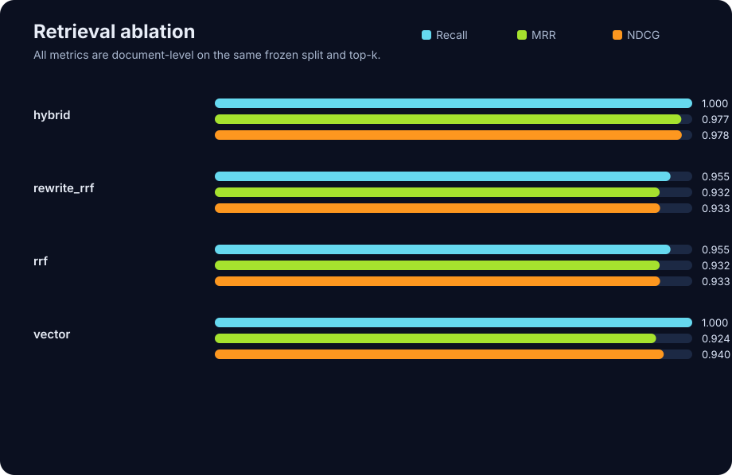

# FastAPI 0.115 technical-documentation RAG benchmark Benchmark: `fastapi-0.115` · version `1.0.0` · corpus benchmark has 80 cases; this run has 30 unique cases (test) · generated 2026-08-05T03:38:35.386773+00:00 ## Retrieval and engineering comparison | Strategy | Recall@6 | MRR@6 | NDCG@6 | p50 | p95 | Known LLM cost | Failure rate | | --- | ---: | ---: | ---: | ---: | ---: | ---: | ---: | | hybrid | 1.000 | 0.977 | 0.978 | 1291 ms | 3466 ms | — | 0.0% | | rewrite_rrf | 0.955 | 0.932 | 0.933 | 4364 ms | 7182 ms | 0.000392 | 0.0% | | rrf | 0.955 | 0.932 | 0.933 | 1183 ms | 2544 ms | — | 3.3% | | vector | 1.000 | 0.924 | 0.940 | 2050 ms | 3857 ms | — | 0.0% | ## Interpretation safeguards - Retrieval metrics are document-level: a wider chunk candidate pool is deduplicated by source before scoring K documents. - Citation alignment is an automatic source-match proxy, not a semantic entailment claim. - Human-audit metrics remain blank until the generated audit JSONL is reviewed. - Known LLM cost covers only usage emitted by the configured provider; it is not an invoice.